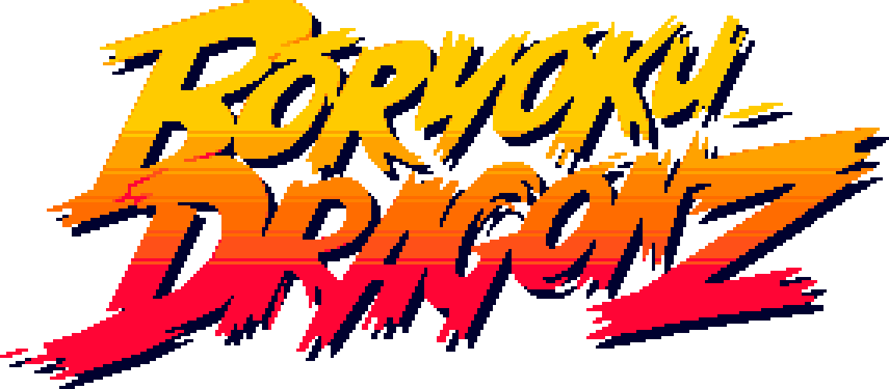

The Manifesto
The best way to predict the future is to create it...
We fly to different lands to write a new chapter...
Come what may, we are ready to take it on!
When others zig, we zag, and we move as one!
We march to the beat of our own drum and our convictions ring true.
Insidoors, outsidoors, have a seat by the fire and enjoy a cup of fresh BOKU.
Pull up a chair, there’s always room for another at the table.
The world outside is a sea of faces, strangers passing by.
But here you can find your tribe...
Onwards into the Long Night...
The BOKU will brew, now and always.
After the Night comes the Dawn.
×